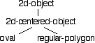
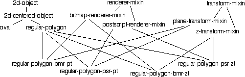

We first encountered structures in Chapter 3, then learned about some of their optional behavior in Chapter 6. In this chapter we'll start to learn about objects in the Common Lisp Object System (CLOS). For now, we'll look at just the ways objects can be used to structure data. Later, in Chapter 14, we'll learn more about CLOS.
When you program with objects you will attempt, in some way, to create a model of some portion of the real world. When you do this, you'll probably notice that some objects are made up of smaller parts. Each part has its own identity; the part is identifiable by itself, separate from any object that it may be a part of. Furthermore, a part may be made from smaller parts. If you drew a picture of the component relationships among all the parts of some complex object, you'd find that they formed a hierarchy. The fully-assembled object will be at the top of the hierarchy (the first level), all of its pieces will be at the second level, all of the pieces that make up the second-level parts will be at the third level, and so on. This hierarchy is a containment hierarchy; each level represents an object, and the next lowest level represents the objects that are parts of the object at the higher level. An object at a higher level contains (or has as parts) some objects at a lower level in the hierarchy, and an object at a lower level is contained by (or is part of) some object at a higher level.
Containment hierarchies are important because they model "has-a" and "is-a-part-of" relationships among objects. These relationships simplify your program's model of the real world by letting you think in terms of relatively small component parts, rather than having to model a single, highly complex object. Modeling by containment also pays off when you can model a similar object in terms of a different combination of components.
An object may have certain characteristics which can not be separated from the object. For example, an object may have color, size, mass, velocity, and temperature. These characteristics are not component parts of the object; they can not be separated from the object, nor can they be combined to create new objects. These characteristics are attributes of the object.
The other kind of hierarchy you'll work with as an object programmer is a classification hierarchy. In a classification hierarchy, objects are connected by "is-a-kind-of" (or more concisely, "is-a" or "a-k-o") relationships. These relationships also have different names depending upon our point of view: if A is a kind of B then A is a specialization of B, while B is a generalization of A.
With the explosion of interest in object programming, many specialized lexicons have grown up to support specific methods and languages. After you eliminate the terms that describe special features of a particular methodology or language implementation, what's left is usually a renaming of containment and classification hierarchies (and the relationships supported by each) and some way to specify object attributes. In fact, the most common renaming is to refer to a classification hierarchy as a "class" hierarchy.
A CLOS object is defined by a DEFCLASS form.
DEFCLASS only describes an object. To create
an instance of an object, you can use a MAKE-INSTANCE
form.
Here's how you would define a trivial object:
? (defclass empty-object () ()) #<STANDARD-CLASS EMPTY-OBJECT>
This class is not very interesting; the () are
placeholders for things to come. Also, note that this particular
Lisp system prints #<STANDARD-CLASS EMPTY-OBJECT> in
response to the DEFCLASS form. This is unreadable --
the reader signals an error whenever it reads a form that begins
with #< -- but it lets you know that something useful
happened.
Once you've defined a class, you can use it to make objects. Most forms
that require a class will accept the name of the class, or you can use
FIND-CLASS to retrieve the actual class, given its name.
MAKE-INSTANCE creates a new object, given a class name or a
class:
? (make-instance 'empty-object) #<EMPTY-OBJECT #x3CA1206> ? (make-instance 'empty-object) #<EMPTY-OBJECT #x3CA1DFE> ? (find-class 'empty-object) #<STANDARD-CLASS EMPTY-OBJECT> ? (make-instance (find-class 'empty-object)) #<EMPTY-OBJECT #x3CB397E>
Again, the Lisp system responds with an unreadable object. This
time, the response includes the storage address of the object. Most
Lisp systems have a default printer for CLOS objects that works like
this, even though the details may differ slightly. The important
thing to note is that MAKE-INSTANCE creates a new
object each time it is called.
Even though the object printer shows a different
address for each object, you should not depend upon the
printed representation to identify an object. Lisp systems can (and
do) change the address of objects at runtime. The only way to
reliably compare the identity of an object is with an identity test
such as EQ (see Chapter
17).
Our first DEFCLASS form defined an object that
wasn't good for much of anything. Now we'll see how to expand a
class definition so that our objects will have named slots. These
serve the same purpose as slots in structures (Chapter 3), they simply
store data. The data could be attributes of the object, or
contained objects, or references to related objects.
To define a class for an object with slots, we start with a
DEFCLASS form and add slot definitions, like this:
? (defclass 3d-point () (x y x)) #<STANDARD-CLASS 3D-POINT>
Here, we've defined a class 3D-POINT whose objects
will have three slots, named X, Y, and
Z. This looks like it might be similar to a structure
definition, such as
(defstruct 3d-point-struct x y z)
but the class actually has less functionality than the
structure. The class does not define default accessors for slots.
To access the slots, you would have to use SLOT-VALUE
as in this example:
? (let ((a-point (make-instance '3d-point)))
(setf (slot-value a-point 'x) 0) ; set the X slot
(slot-value a-point 'x)) ; get the X slot
0
If you try to get the value of a slot before setting it, Lisp will signal an error because the slot is unbound (i.e. it has no value).
? (let ((a-point (make-instance '3d-point)))
(slot-value a-point 'y))
> Error: Slot Y is unbound in #<3D-POINT #x3CD3216>
Getting and setting slots with SLOT-VALUE forms is
slightly cumbersome when compared to the accessors created
automatically for slots in a structure. Fortunately, you can specify
accessors for each slot when you define a class.
(defclass 3d-point () ((x :accessor point-x) (y :accessor point-y) (z :accessor point-z)))
Then, object slot access looks just like structure slot access.
? (let ((a-point (make-instance '3d-point)))
(setf (point-x a-point) 0)
(point-x a-point))
0
You can also specify separate accessor names for reading and writing a slot.
? (defclass 3d-point ()
((x :reader get-x :writer set-x)
(y :reader get-y :writer set-y)
(z :reader get-z :writer set-z)))
#<STANDARD-CLASS 3D-POINT>
? (let ((a-point (make-instance '3d-point)))
(set-z 3 a-point)
(get-z a-point))
3
Do you see the difference between specifying
:accessor and :writer? Notice that the
slot writer is not used with SETF. Also note
the order of arguments to the slot writer: first the value, then the
object.
It's useful to have all of these options for slot access when
you're writing a complex program. Through various combinations of
slot accessor definitions, you can give a slot read/write,
read-only, write-only, or no access. You might think that the last
two cases wouldn't be useful, but they are. A write-only slot might
provide information that is only useful to establish a state within
the object in response to a request from the object's client -- a
seed for a random number generator, for example. A no-access slot
can maintain information that should be known only by the internal
workings of the object; functions that manipulate the object's
internal state can still access the slot using
SLOT-VALUE.
The existence of SLOT-VALUE is anathema to some
object designers, who believe that the privacy of an object's
internal information should be absolutely protected against
client access. Lisp requires the exercise of programmer discipline
to protect an object's private information. As a rule of thumb, you
should use SLOT-VALUE to manipulate private slots, and
provide appropriate named accessors for all other slots. Having done
so, any appearance of a SLOT-VALUE form in a client
program signals a violation of your intent to hide some object's
private state.
In this section we'll see how to define special-purpose accessors that do more than just read and write slot values. Think of this as a sneak preview of Chapter 14.
Let's define a sphere. A sphere is defined by its position in 3-space and by its radius. We'd like to query the sphere for its volume. Finally, we'd like to be able to move -- or translate -- the sphere's position by a specified amount without having to explicitly calculate its new coordinates. We start with this class definition:
? (defclass sphere ()
((x :accessor x)
(y :accessor y)
(z :accessor z)
(radius :accessor radius)
(volume :reader volume)
(translate :writer translate)))
#<STANDARD-CLASS SPHERE>
The accessors for X, Y, Z,
and RADIUS need no further explanation, but the accessors
for VOLUME and TRANSLATE aren't yet useful;
the VOLUME reader will fail because its slot is unbound
and the TRANSLATE writer won't do anything except to set
its slot.
We'll finish the definition of our sphere by first having
VOLUME return a value calculated from the sphere's radius.
There are two ways to do this: have VOLUME read the sphere's
radius and calculate the corresponding volume, or have RADIUS
calculate the volume and set the volume slot for later use by the
VOLUME accessor. Here are both solutions -- if you try this
out, pick just one:
; Volume from Radius
(defmethod volume ((object sphere))
(* 4/3 pi (expt (radius object) 3)))
; Radius to Volume
(defmethod radius ((new-radius number) (object sphere))
(setf (slot-value object 'radius) new-radius)
(setf (slot-value object 'volume)
(* 4/3 pi (expt new-radius 3))))
This is not the best example of Lisp style. You're defining a default reader or writer method in theDEFCLASSform, then redefining the method to add special behavior. Your Lisp system may warn you about the attempted redefinition; it's OK to continue from the warning and redefine the method.One way to avoid the problem is to omit the slot option that defines the default
:READER(forVOLUME) or:WRITER(forTRANSLATE) in theDEFCLASSform, but then you lose the documentation provided by these declarations. We'll see some other declarations in Chapter 14 that can help to improve readability.
The DEFMETHOD form defines a function which applies only
to certain argument types. In this case, the VOLUME method
applies only to SPHERE objects, and the RADIUS
method applies only to a NUMBER (the new radius) and a
SPHERE. The VOLUME method computes the volume
from the sphere's radius each time it is called. The RADIUS
method computes the sphere's volume each time the radius is set; the values
of both radius and volume are stored in the sphere's slots by the
SLOT-VALUE forms.
You can think of a default slot reader and writer as being defined like
this (but the compiler probably generates better code if you just use the
default accessors created automatically by the :READER and
:WRITER slot options):
; Default slot reader (illustration only) (defmethod slot-reader ((object object-class)) (slot-value object 'slot-name)) ; Default slot writer (illustration only) (defmethod slot-writer (new-value (object object-class)) (setf (slot-value object 'slot-name) new-value))
Specialization is one of the most important concepts in object programming. Specialization allows you to define an object in terms of another object by describing features that are new or different; the base functionality of the object is inherited from the definition of the parent.
In the simplest kind of specialization, single inheritance, a child inherits traits from just one parent. As an example, we'll define some basic two dimensional objects using a single inheritance hierarchy.
(defclass 2d-object () ()) (defclass 2d-centered-object (2d-object) (x :accessor x) (y :accessor y) (orientation :accessor orientation) (defclass oval (2d-centered-object) (axis-1 :accessor axis-1) (axis-2 :accessor axis-2)) (defclass regular-polygon (2d-centered-object) (n-sides :accessor number-of-sides) (size :accessor size))
The inheritance graph for these four classes looks like this:

The 2D-OBJECT class is a placeholder from which we
might later derive other 2D objects, e.g. lines and points. A
2D-CENTERED-OBJECT has a central reference position
specified by its X and Y attributes, and
an orientation -- the amount the object is rotated about its central
position. The OVAL and REGULAR-POLYGON
classes inherit from 2D-CENTERED-OBJECT, retaining the
position and orientation attributes of the parent class and adding
attributes appropriate to the geometry of the derived objects.
CLOS supports multiple inheritance, which lets a class inherit traits from more than one parent. This is useful for a programming style that starts with common functionality and then "mixes in" extensions to the basic behavior.
As an example, let's suppose that we'd like to write code to render the 2D objects we started to define in the previous section. Let's say that we'd like to achieve two goals simultaneously: we'd like to render images on either a bitmapped or a Postscript display device, and we'd like to render the objects either on a plane surface or as a projection in a "2.5D" space, where each 2D object has a Z depth, and the system provides a choice of view positions. These requirements are not at all interdependent; one deals with the details of rendering objects on a display device, while the other deals with transformations of the objects that must occur prior to rendering.
One way to address these requirements is by using multiple inheritance. One set of of mixins handles transforms, while another set of mixins handles the details of rendering to a display device. With a carefully designed protocol for sharing information, new combinations of transforms and renderers can be added to our 2D objects without rewriting any existing code.
We saw in the previous section how single inheritance is written
using DEFCLASS, by putting the parent's class name
within the first parentheses following the new class name. Classes
that inherit from multiple parents simply list all of the parents.
Thus to define all the combinations of transform and rendering for
our REGULAR-POLYGON class, we could do something like
this:
(defclass renderer-mixin () (...))
(defclass bitmap-renderer-mixin (renderer-mixin) (...))
(defmethod render (description (self bitmap-renderer-mixin)) ...)
(defclass postscript-renderer-mixin (renderer-mixin) (...))
(defmethod render (description (self postscript-renderer-mixin)) ...)
(defclass transform-mixin () (...))
(defclass plane-transform-mixin (transform-mixin) (...))
(defmethod transform ((self plane-transform-mixin)) ...)
(defclass z-transform-mixin (transform-mixin) (...))
(defmethod transform ((self z-transform-mixin)) ...)
(defmethod draw ((self regular-polygon))
(render (transform self) self))
(defclass regular-polygon-bmr-pt (regular-polygon
bitmap-renderer-mixin
plane-transform-mixin)
(...))
(defclass regular-polygon-psr-pt (regular-polygon
postscript-renderer-mixin
plane-transform-mixin)
(...))
(defclass regular-polygon-bmr-zt (regular-polygon
bitmap-renderer-mixin
z-transform-mixin)
(...))
(defclass regular-polygon-psr-zt (regular-polygon
postscript-renderer-mixin
z-transform-mixin)
(...))
Now our class hierarchy looks like this:

I've shown a few method definitions to give you an idea for how
the drawing protocol interacts with the mixin definitions to
generate the expected behavior. The DRAW method
specialized on the REGULAR-POLYGON class provides the
protocol: it calls TRANSFORM to apply a transform to
itself, then RENDER to draw itself, using some (as yet
unspecified) description generated by TRANSFORM.
Now let's assume that we've created an instance of
REGULAR-POLYGON-BMR-PT and have called the
DRAW method:
(let ((poly (make-instance 'regular-polygon-bmr-pt ...))) (draw poly))
The DRAW method is not specialized on the
REGULAR-POLYGON-BMR-PT class, so we invoke the more
general method specialized on REGULAR-POLYGON. This
DRAW method then attempts to invoke methods
TRANSFORM and RENDER which are specialized
on the REGULAR-POLYGON-BMR-PT class; these methods are
defined, so they provide the mixin behavior we'd expect.
As you can see from this very simple example, mixins are a
powerful tool for object programming. Having predefined a very
simple protocol -- the DRAW method which invokes
TRANSFORM and RENDER -- we can add new
behaviors to our system by defining additional mixins. The original
code is unchanged. Because Lisp can add definitions dynamically, you
don't even have to stop your software to extend it in this manner.
By default, an object's slots are unbound in a new object. In
many cases it would be more useful to give slots some meaningful
initial value. For example, our 3D-POINT could be
initialized to the origin.
(defclass 3d-point () ((x :accessor point-x :initform 0) (y :accessor point-y :initform 0) (z :accessor point-z :initform 0)))
The :INITFORM slot option provides a value for the
slot at the time the object is created. The initialization form is
evaluated every time it is used to initialize a slot.
You might also want to provide specific initialization arguments
when an object is created. To do this, use the :INITARG
slot option.
(defclass 3d-point () ((x :accessor point-x :initform 0 :initarg :x) (y :accessor point-y :initform 0 :initarg :y) (z :accessor point-z :initform 0 :initarg :z)))
To create a 3D-POINT object using explicit
initializers, you'd do something like this:
(make-instance '3d-point :x 32 :y 17 :z -5)
Because the class definition includes both :INITFORM
and :INITARG options, the slot will still get its
default value if you omit an explicit initializer.
Slot definitions also allow :DOCUMENTATION and
:TYPE options.
(defclass 3d-point ()
((x :accessor point-x :initform 0 :initarg :x
:documentation "x coordinate" :type real)
(y :accessor point-y :initform 0 :initarg :y
:documentation "y coordinate" :type real)
(z :accessor point-z :initform 0 :initarg :z
:documentation "z coordinate" :type real)))
The :TYPE option may be used by the compiler to
assist in code optimization or to create runtime tests when setting
slots. However, this behavior may vary among Lisp compilers, and the
standard does not require any interpretation of the
option. Therefore, it is best to think of this as additional
documentation to the person reading your program.
In Chapter 14 we'll examine methods in greater depth and see how to associate behaviors with objects.